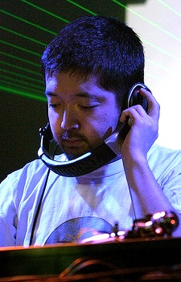
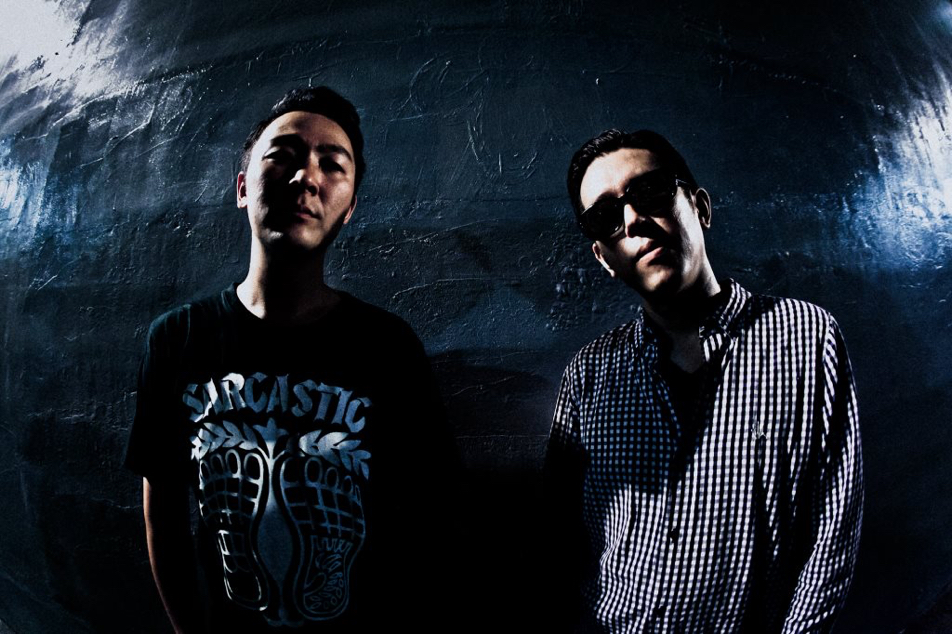

Principales artistas involucrados

Jun "Nujabes" Seba fue un productor, ingeniero en sonido, DJ y compositor conocido como uno de los pioneros en el genero lo-fi hip hop por su uso de
elementos del hip hop y jazz para componer piezas atmoesfericas y nostalgicas. Entre sus otros trabajos se encuentra su composición Luv(sic) Hexalogy en la cual
colaboró con el artista Shing02.
Shinji "Tsutchie" Tsuchida es miembro del grupo Shakkazombie junto a Takeshi "Big-O" Osumi y Hidehiro "Hide-Bowie" Iguchi, con Tsutchie siendo el DJ y compositor del
grupo. Mientras el grupo es reconocido como uno de los mas influyentes del rap japones, Tsutchie es conocido por su trabajo produciendo para otros artistas al igual que
series como Samurai Champloo y GANGSTA.
Jon Erin "Fat Jon" Marshall es un productor y rapero estadounidense que forma parte de los grupos Five Deez, 3582, Rebel Clique y Beautiful Killing Machine. Aunque su trabajo
colaborativo se a relentizado, sigue sacando albunes individuales con el mas reciente siendo Plaything: Cipher en 2022.
FORCE OF NATURE es un duo compuesto por Kitazawa "KZA" Ikuzumi y Kento "DJ Kent" Sasaki. Se volvieron conocidos en la escena de clubs y baile japonesa por sus composiciones
inspiradas en hip hop, disco, techno, house, dub y electronica. Entre los temas instrumentales que hicieron para Samurai Champloo se denota el rap Hiji Zuru STYLE en conjunto con "Suiken" y
"S-Word" del grupo Nitro Microphone Underground.
